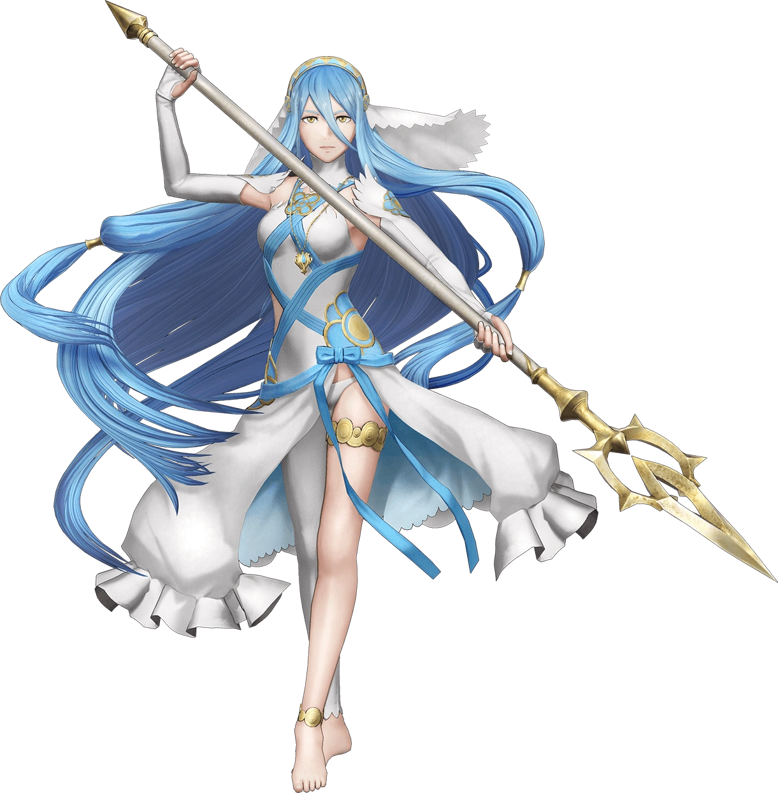

History
The song first appeared in Fire Emblem Fates, as the character, Azura is the known singer to be singing this song. Another character that sings this song is Azura's song, Shigure, who is first seen in Paralogue 3: Surprise Duet in Fire Emblem Fates.
The Japanese version of the song, sung by Renka, had limited editions DVDs and a music video of Renka singing Lost in Thoughts All Alone.
The song is first heard in the trailer for Fire Emblem Fates in the Birthright route, where there is a different version to the song in the Conquest version, where players can listen to one of the two songs on each route.
